A driving score is only valuable if people can use it.
DriveScore helps drivers use their driving behaviour to access car insurance discounts. The app measures how they drive and builds a score they can share when comparing insurance.
That creates a compelling promise: drive well, and it could help you pay less. My role as Lead Product Designer was to help turn that promise into an experience people understood, trusted and acted on.
More quote starts weren’t translating into more purchases.
I started with the data, looking for opportunities to grow car insurance purchases. I discovered that more people were starting quotes, but that increase wasn’t translating into more purchases.
That led me further down the funnel: what was happening between starting a quote, seeing a price and deciding to buy? Getting people into the journey was only part of the opportunity. I wanted to understand what would help them feel ready to act once they had a quote.
The opportunity was to help more people reach a decision once they were already in the journey.
Creating a strategy and roadmap for the whole funnel.
Focused on the final step.
I saw a six-month window before insurance prices were expected to rise, as more drivers shopped around rather than accepted their renewal. I worked with the team to make insurance purchases per month our shared measure of success. That meant working backwards across the funnel: attract the right people, remove friction, then understand what would help someone act once they reached a quote.
 The purchase decisionNew idea
The purchase decisionNew ideaExploring ideas from the team, and challenging their impact on user trust and experience.
Faster, smarter, AI quotes
One idea from leadership was to use AI to make getting a quote quick. The reasoning was understandable: if all someone wants is a lower price, why make them answer so many questions?
I tested that assumption with the team, using ChatGPT to see what it would produce. In the examples we tried, the answers were consistently wrong. A quick answer wasn’t enough if we couldn’t rely on it.
That test changed the question I wanted us to answer. Instead of asking how AI could generate a price, I wanted to explore how we could intelligently help people find a better one.
DriveScore
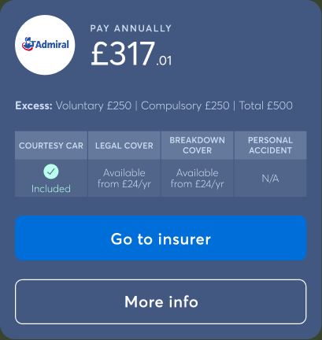
In the original test, ChatGPT estimated £750–£1,050 per year and suggested £850 per year as a planning number. The actual DriveScore quote shown alongside was £317.01.
Testing discount tags
The commercial team proposed adding a discount tag to the quote results. It was a reasonable idea to explore: make the benefit more visible and help people recognise the value of buying through DriveScore. I developed different ways to present the tag and tested them with users.
The response challenged the hypothesis. Rather than making the quotes more appealing, the tags made people question how the prices were being presented. That doubt spread beyond the label: users began to lose trust in the whole results panel. They wanted to see what the discount was based on, including an original price and the lower price beside it.
It showed how fragile the purchase decision was at this stage. A small visual cue could weaken confidence in the entire comparison. We did gain a useful insight: people expected a discount to show an original price alongside a new, lower price. Simply labelling a quote as discounted wasn’t enough. Insurers could only give us a final price, without an original price to compare it with. That constraint sharpened the brief: help drivers see a credible saving they could understand and check for themselves.
An older insight became useful in a new way.
I revisited research carried out before I joined. Users had responded positively to MoneySavingExpert-style tips for reducing insurance costs, such as exploring alternative job titles that accurately describe their work.
Seen alongside the discount-tag research, that suggested a new direction. Could we help people explore relevant changes to their quote, then show the price difference those changes made?
Three ways to help people see more value.
I ran an ideation workshop that helped the team move beyond describing an idea. I prepared a set of prompts before the session so we could turn the ideas people brought into interactive prototypes, there and then.
That bridged a familiar gap between the team, an idea and the designer. Not everyone can articulate a product experience in design terms. Giving an idea something people could click and react to helped them explain what they meant, spot what was missing and build on each other’s thinking.
The quality of the ideas improved because we were discussing something tangible together. The team loved seeing their suggestions come to life during the session. AI helped us express and explore ideas; the team still challenged the assumptions and decided what was worth pursuing.
We used that process to explore three ways to connect practical savings guidance with a price difference people could actually see.
| Direction | What it offered | The decision |
|---|---|---|
| Educational content | Offer the “ways to lower your car insurance” tips people had mentioned in earlier research. | A longer-term approach to an immediate decision. |
| A slashed price | Show an original price beside a lower price, reflecting what people expected to see in our discount-tag research. | We couldn’t reliably produce the original price needed to substantiate the discount. |
| Compare two real quotes | Our “what if”: could we run a quote twice—before and after users applied suggestions—and show two real prices? | The direction we progressed into Quote Agent. |
Quote Agent: a practical way to explore a better price.
The MVP brought that direction into the quoting experience. Quote Agent surfaced suggestions that could lower a user’s insurance price and let them review the changes before returning to their quotes.
The core sequence was simple: review a suggestion, choose whether to apply it, then see the updated result. The user stayed in control of the information in their quote.
This gave us a way to make a potential saving tangible without manufacturing a “before” price. We could compare a quote with the result of changes the user had chosen.
Smart adjustments
See why you could be paying too much.
Make a change in a moment.
Bring the relevant settings into view. Understand the suggestion, decide whether it fits, and keep control of every change.
A small change. A new possibility.Collaborating with data and developers early.
Showing an original quote, relevant suggestions and a new price meant caching quotes—something we hadn’t done before. I worked with the data and development teams early to understand what the implementation would involve, test its feasibility and identify the technical constraints before we committed to the experience.
That collaboration helped us reduce the risk around keeping the first quote available while running a second, so people could compare the result of their changes.
Find the changes worth someone’s attention.
I researched ways users could reduce their insurance price, then tested which changes had the greatest impact. That work helped us decide which suggestions to include and which to make most prominent.
The aim was to turn a broad set of savings tips into a focused experience: useful suggestions, in a meaningful order, with a clear choice about whether each one applied.
Make each suggestion easy to understand and act on.
The design developed through iteration and user testing. At the heart of the experience was a repeated decision: understand the suggestion, decide whether it fits, and apply it or move on.
The flow introduced what Quote Agent would do, showed progress during the review, and presented suggestions one at a time. Users could apply or skip a change before seeing their updated quote.
Explore the design history
Validating the idea through usability testing.
I tested whether people understood Quote Agent and could use it confidently. Car insurance is complex: the journey needed to make clear which details were being changed, what the user was committing to and what they should expect on the next screen.
People understood the idea.
- Mileage recommendations were highly trusted.
- People liked recommendations backed by data.
- Savings-focused messaging performed well.
- The overall concept was understood quickly.
The details needed more clarity.
- Excess was poorly understood.
- Household-car wording caused confusion.
- Some AI tips felt vague or unsupported.
- People skimmed important information.
- Some users were unsure what “skip” meant.
Forming a narrative that gives users a reason to try it.
The feature needed a story around it. I worked on the narrative and the entry points that would introduce Quote Agent: full-screen takeovers, emails and universal cards.
The central idea was to help users explore whether they could get a better price within DriveScore. That connected the invitation to the feature itself: suggestions they could review, followed by a result they could compare. We focused the narrative on two testable experiments: sell the pain and create curiosity. These gave us distinct approaches we could A/B test in production.
Intelligence, in the details.
Colour
Identity
Gradients
Design feel / Averta
Dynamic
Clear
Intelligent
Familiar
Buttons / States
Trust / Connected insurers
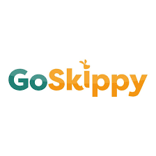
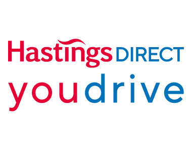
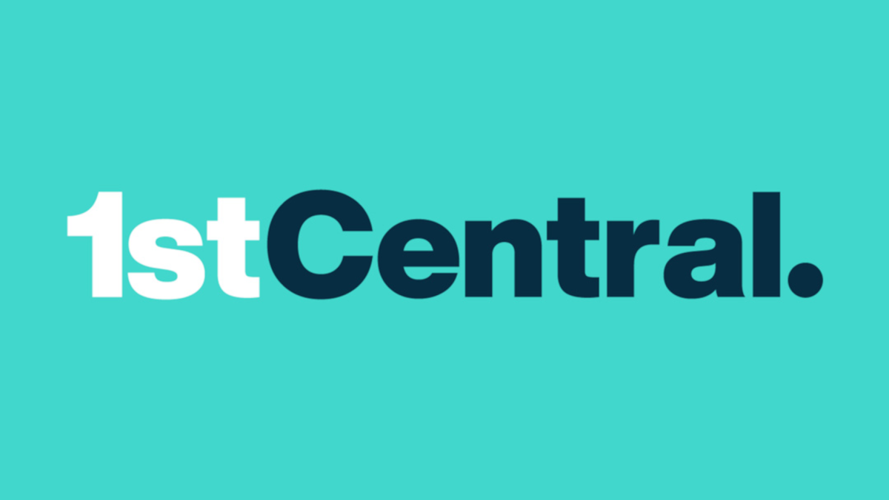
Visual indicators
Components / In context
Your mileage looks lower than you quoted. Based on your DriveScore data, you drive around 1,580 miles a year — less than your current quote.
Confetti
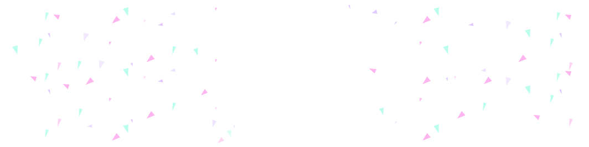
Refining the handoff in code.
I built HTML prototypes to communicate the animation behaviour to developers and refine the details in code. Being able to play, adjust and replay the experience gave us a concrete reference for how the finished interaction should feel. Try a simplified version below.
For the savings celebration, the prototype exposed controls for the confetti’s duration, particle count, launch speed, gravity and settling behaviour. I could fine-tune those settings in context, checking how the animation worked around the saving and policy details.
That made the handoff more precise. Alongside the visual design, developers had a working example and the settings behind it—a shared reference for maintaining the quality of the animation through implementation.
A little room to play.
Adjust the confetti and replay it. This is the working animation used to refine the handoff.
Get value into people’s hands, then build on it.
We sequenced delivery around the value people could use immediately. The core product had the greatest direct impact; discovery depended on having that product ready; motion then made the effort, progress and outcome feel more trustworthy.
- Direct impact
- Financial trust
Ship the usable benefit.
Let drivers review changes and compare a real quote, without waiting for the campaign and motion polish.
Depends on Accurate suggestions and a working quote journey.
Relative design priorities, not measured results.
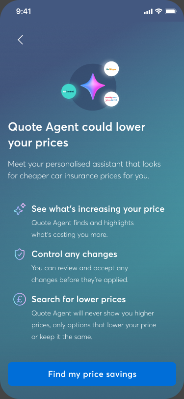
Understand the benefit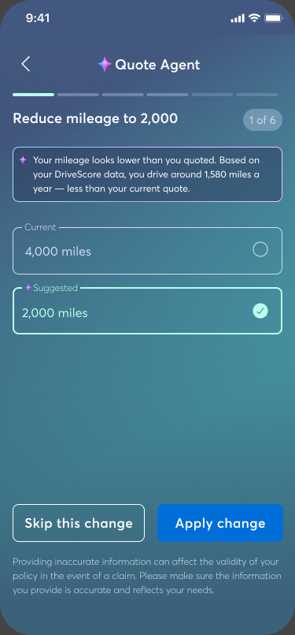
Apply or skip changes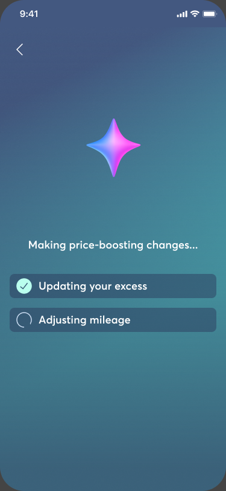
Look for a lower price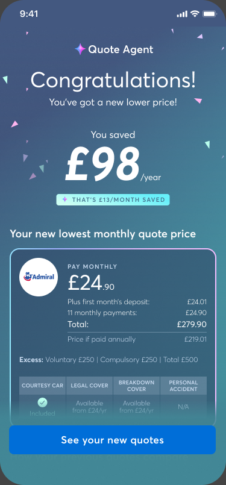
See the differenceKeep the original quotes
Keep the best available price
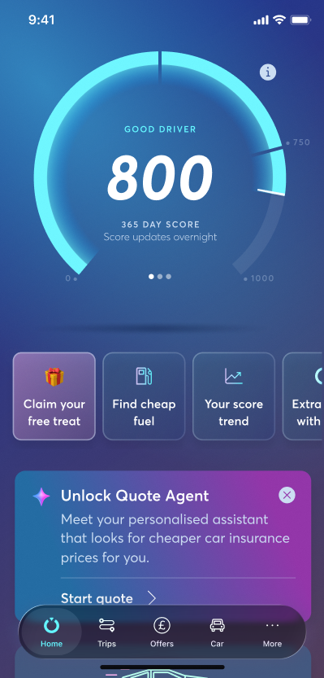
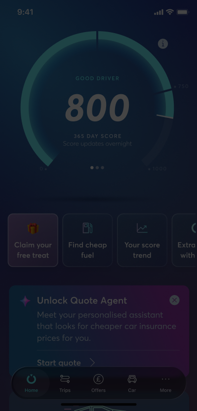
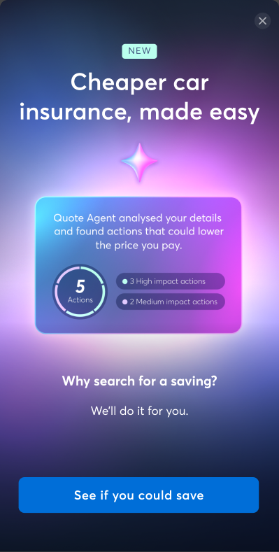
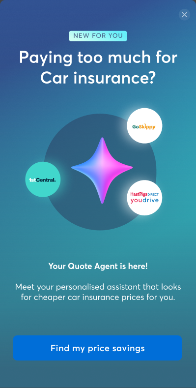
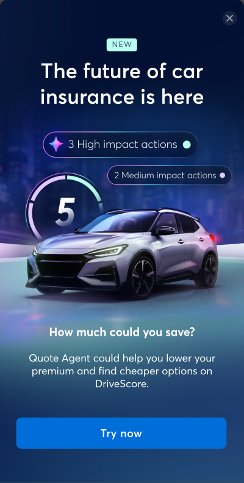
Dashboard
A little intelligence at work.
Let’s take a look at the results again.
Helping more drivers move from a quote to a purchase.
- 45% → 58%
- Quote completion
- 18% → 23%
- Quote-to-purchase conversion
- Best-ever month
- DriveScore revenue
Wider quote-journey improvements · +13 percentage points
+5 percentage points · contributing to 21% revenue growth
August 2026 · highest monthly revenue since launch
Across the wider quote-journey work, completion increased from 45% to 58%—13 percentage points more users reaching their quotes. Completion subsequently settled at around 55%.
Quote Agent built on that foundation by helping drivers explore relevant changes, see the effect on their price and decide whether to buy. Quote-to-purchase conversion increased from 18% to 23%—a gain of 5 percentage points—contributing to 21% revenue growth.
The work also contributed to August 2026 becoming DriveScore’s highest-revenue month since launch.
Together, these outcomes reflect the two parts of the challenge: help more people reach a price, then give them a useful next step towards purchasing a policy.
What did I learn in this project?
A better question led to a more useful product.
The project began with a push for more quotes and a proposal to make quoting faster with AI. Research helped us find a more specific opportunity: help people explore a better price and understand what had changed.
For me, the most valuable work was connecting those pieces—challenging an assumption, revisiting earlier research, making the trade-offs visible and carrying the idea through to the details of the experience.